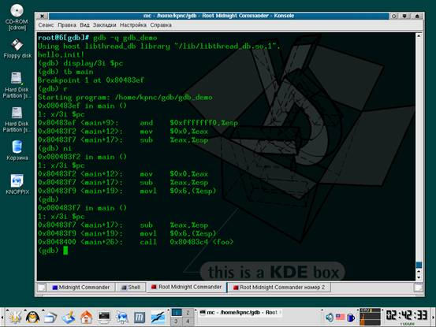
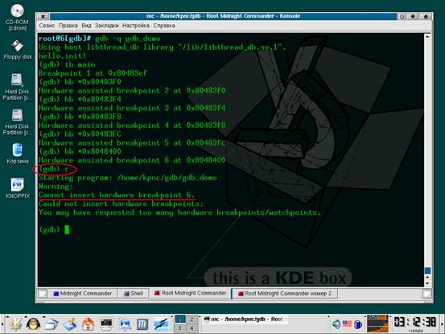
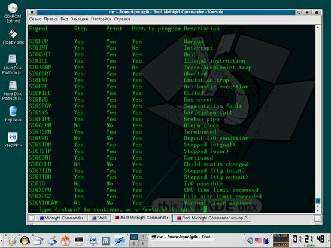
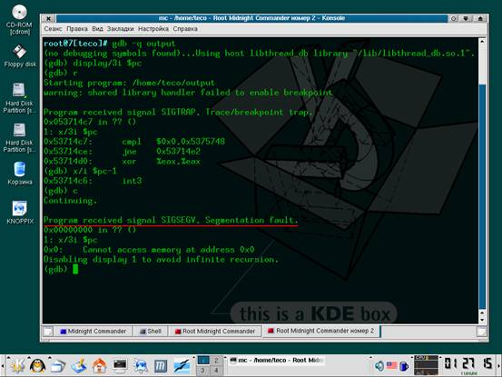
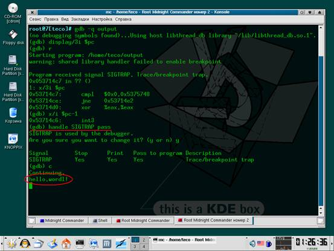

В этой статье мы проложим наше погружение в gdb, исследуя его возможности с точки зрения хакера, отлаживающего двоичные файлы без исходных текстов. мы рассмотрим технику изменения потока выполнения программы, точки останова и наблюдения, механизмы трассировки и средства работы с памятью. в общем, все то, что делает взломщиков счастливыми людьми.
Изменение потока выполнения
Программа, загруженная командой "file" (или указанная в командной строке), находится в бесформенном состоянии, представляющим собой всего лишь совокупность байт, записанных в выделенном регионе адресного пространства. Новый процесс для нее еще не создан и трассировать ее невозможно. Во всяком случае до тех пор, пока мы не дадим команду "run" или "r" (которой обычно предшествует установка точки останова на функцию main или start). Будучи запущенной, программа будет работать до тех пор, пока не встретит точку останова или не получит no-stop сигнал (см. "обработка сигналов"). Применение команды "run" к уже запущенной программе, приведет к ее перезапуску (в конфигурации по умолчанию отладчик запрашивает подтверждение).
Продолжить работу программы, остановленной по точке останова или сигналу, можно командой "continue" ("c"), действующей так же, как и "run" (т. е. работающей до точки останова/сигнала).
Чтобы передать управление по произвольному адресу, необходимо сделать "jump" ("j") за которым следует адрес, имя функции или регистр. В частности, "j *$pc" по своему действию аналогична команде "continue", "j foo" передает управление на метку/функцию foo (если только она присутствует в таблице символов), а "j *0x80484AA" – прыгает на адрес 80484AAh. Если одни и те же адреса используются многократно, их можно загнать в пользовательскую переменную командой "set $my_foo=0x80484AA", а затем использовать ее в качестве параметра команды jump – "j *$my_foo". Отладчик soft-ice, кстати, ничего подобного делать не умеет!
Команда "until" ("u") продолжает выполнение программы вплоть до указанного адреса (например, "u *0x080484ED"), при достижении которого останавливается и передает управление отладчику. Как и "jump", команда "until" поддерживает работу не только с метками и адресами, но и переменными, значительно упрощая взлом. Без аргументов "until" аналогична команде "nexti" (см. "трассировка") — она переходит на следующую машинную команду, пропуская функции и циклы.
Рассмотрим следующий код:
.text:080484EB jb short loc_80484EF ; à на выход из цикла
.text:080484ED jmp short loc_8048532 ; à к началу тела цикла
.text:080484EF lea eax, [ebp + var_28] ; первая команда за концом цикла
Листинг 1 фрагмент цикла, демонстрирующего сущность команды until
Команда "until", отданная на строке 80484EBh, равносильна "u *0x80484EF" — она выполняет цикл и передает управление отладчику только по выходу из него. Очень удобно!
Если нам необходимо дождаться выхода из функции, автоматически остановившись при встрече c RET — на этот случай предусмотрена команда "finish", аналогичная команде "P RET" отладчика soft-ice. Вместо пошаговой трассировки программы, gdb просматривает фрейм предыдущей функции (что можно сделать командой "backtrace" или "bt") и устанавливает точку останова на адрес возврата, что обеспечивает максимальную эффективность выполнения, но… если раскрутить стек и восстановить цепочку фреймов отладчику не удается, команда "finish" отказывает в работе.
Команда "return", в отличии от "finish", приводит к немедленному возвращению в материнскую функцию без выполнения оставшегося "хвоста". soft-ice этого делать не умеет, а зря! "return" очень полезная и довольно часто используемая команда.
Еще soft-ice не умеет вызывать функции, а gdb это делает без всякого напряжения командой "call" за которой следует имя функции/переменная/регистр или адрес. Аргументы (если они есть) передаются в круглых скобах по Си-соглашению, то есть заносятся в стек справа налево, которые выталкиваются из стека все той же командой "call". Например, "call foo(1,2,3)" или "call 0x8048384(1,2,3)".
При желании можно даже выполнить команду оболочки, не выходя из отладчика. Это делается так: "shell ls" или "shell man open". Просто фанатически удобно! Впрочем, аналогичного результата можно добиться, открыв дополнительную консоль. Поскольку, gdb – это отладчик прикладного уровня, он, в отличии от gdb, не замораживает систему, позволяя использовать естественную многозадачность без извращения с "shell".
С трассировкой связны всего две команды: "stepi n" ("si n") выполняет n следующих инструкций с заходом в циклы и функции, а "nexti n" ("ni n") – без захода. При запуске без аргументов выполняется только одна инструкция. Нажатие на <ENTER> автоматически повторяет последнюю команду ("stepi" или "nexti"), что значительно ускоряет трассировку (кстати, лупить по <ENTER'у> намного удобнее, чем давить на любую из функциональных клавиш, используемых для трассировки Windows-отладчиками).
Команды "step n"/"next n" (упоминание о которых можно найти в документации на gdb) ориентированы на работу с исходными текстами и выполняют n строк, а в отсутствии символьной информации трассируют программу вплоть до ее завершения, что не есть хорошо.

Рисунок 1 пример сеанса трассировки
Отладчик gdb поддерживает два типа точек останова: останов по выполнению кода – breakpoint, и останов по обращению к данным (так же называемый точками наблюдения) — watch-point. (Еще gdb поддерживает точки перехвата, но для отладки программ без исходных текстов они практически бесполезны).
Точки останова могут быть как программными, так и аппаратными. Программная точка останова по выполнению на x86-платформе представляет собой однобайтовую инструкцию CCh (INT 03h), а программный watch-point реализуется путем пошаговой трассировки программы с отслеживанием обращений к подопытной ячейке, что, во-первых, крайне непроизводительно, а, во-вторых, некоторые программы просто не позволяют себя трассировать. Аппаратных точек останова на x86 всего четыре, программных же можно устанавливать сколько угодно.
Программная точка останова по исполнению задается командой "break" ("b") за которой следует имя функции/адрес/регистр или переменная. Например, "b main", "b *0x80484BC". Команда "tbreak" ("tb") устанавливает одноразовую точку останова, которая автоматически удаляется при срабатывании. Аппаратная точка останова задается командой "hbreak" ("hb"), а временная аппаратная точка — "thbreak" ("thb"). После установки аппаратной точки останова отладит сообщает "Hardware assisted breakpoint N at адрес", однако, это еще не значит, что операция завершилась успешно. Для проверки можно установить хоть тысячу аппаратных точек останова и все будет ОК, но вот только при запуске программы командами "run" или "continue" отладчик может сообщить: "Warning: Cannot insert hardware breakpoint N".

Рисунок 2 реальная установка точек останова происходит только при начале выполнения программы
Аппаратные точки наблюдения на запись ячейки задаются командой "watch" ("wa"), команды "rwatch" ("rw") и "awatch" ("aw") устанавливают точки наблюдения на чтение и чтение/запись соответственно (например, "rw *0xBFFFFA50", а вот "rw *$esp" уже не срабатывает и отладчик сообщает "Attempt to dereference a generic pointer") . Как и в случае с точками останова по выполнению, сообщение "Hardware read watchpoint N: адрес" не означает ровным счетом ничего и при попытке запуска/продолжения выполнения программы отладчик может сказать: "Could not insert hardware watchpoint N", обламывая нас по полной программе.
Все точки наблюдения/останова могут быть условными, то есть срабатывать только в том случае, если значение выражения, стоящего после "if", истинно. Например, "b if $eax==0", или "rw *0xBFFFFA60 if (*((unsigned int*)$esp)!=0x669)".
При установке всякой точки наблюдения/останова отладчик присваивает ей номер, который, во-первых, высвечивается при ее срабатывании, а, во-вторых, может быть использован в командах управления точками наблюдения/останова. Номер последней сработавшей точки останова автоматически заносится в переменную $bpnum.
(gdb) hb main
Hardware assisted breakpoint 1 at 0x80483ef
(gdb) r
Starting program: /home/kpnc/gdb/gdb_demo
Breakpoint 1, 0x080483ef in main ()
Листинг 2 при установке точки наблюдения/останова, отладчик автоматически присваивает ей своей собственный номер (в данном случае равный единице)
Команда "ignore n x" устанавливает счетчик игнорирования точки наблюдения/останова n, пропуская первые x срабатываний, что особенно полезно в циклах.
Если при срабатывании точки останова/наблюдения необходимо выполнить некоторую последовательность операций, можно воспользоваться командой "commands n" (где n – номер точки наблюдения/останова), пример использования которой показан ниже:
commands 6
printf "hello, world\n"
ends
Листинг 3 автоматическое исполнение последовательности команд при срабатывании точки останова (в данном случае при срабатывании точки номер 6 будет выведено приветствие "hello, world!")
Получить информацию по точкам останова поможет команда "info break" ("i b" или "info watchpoints"). При запуске без аргументов она выдаст данные о состоянии всех точек наблюдения/останова. Если же необходимо "проэкзаменовать" какую-то конкретную точку наблюдения/останова, достаточно указать ее номер, например:
(gdb) i b 13
Num Type Disp Enb Address What
13 read watchpoint keep y *134513676
stop only if $eax == 4
(gdb)
Листинг 4 просмотр информации о точке наблюдения номер 13
Команда "clear" (она же "delete") используется для удаления точек наблюдения/останова. При запуске без аргументов она удаляет _все_ точки (при этом отладчик запрашивает подтверждение), если же необходимо удалить какую-то одну конкретную точку — достаточно задать ее номер, например: "delete 13", так же можно удалить целый диапазон точек останова/наблюдения: "delete 1-6" удаляет точки наблюдения с первой по шестую включительно и никакого подтверждения при этом не запрашивается, так что будьте на чеку!
Команды "enable" и "disable" используются для временного включения/выключения точек наблюдения/останова и имеют тот же самый синтаксис, что и "delete".
Дамп памяти для хакеров — это святое. Без него не обходится ни один взлом. Просматривать/модифицировать память можно разными способами. Например, с помощью команды "print"/"printf":
(gdb) p $esp # вывод содержимого регистра esp
$1 = (void *) 0xbffffa50
(gdb) p (char) $esp # вывод младшего байта регистра esp
$2 = 80 'P'
(gdb) p *0x80483ef # вывод содержимого двойного слова в десятичном знаковом виде
$3 = -1192172413
(gdb) p/x *0x80483ef # вывод содержимого двойного слова в hex-виде
$4 = 0xb8f0e483
(gdb) p/u *0x80483ef # вывод содержимого двойного слова в десятичном беззнаковом виде
$5 = 3102794883
(gdb) p $esp = 0 # присвоение регистру esp значения 0
$6 = (void *) 0x0
(gdb) p/x *((char*)0x8048413)=0x90
$7 = 0x90 # присвоение значение 90h байту по адресу 8048413h
Листинг 5 чтение и модификация памяти при помощи команды p (print)
Однако, при просмотре большого количества ячеек памяти выгоднее использовать специальную команду "x", позволяющую задавать длину отображаемого блока памяти, смотрите:
(gdb) x/16x $pc # просмотр 16 двойных слов в hex-виде, начиная от $pc
0x80483ef <main+9>: 0xb8f0e483 0x00000000 0x04c7c429 0x00000624
0x80483ff <main+25>: 0xffbfe800 0x458dffff 0x24048988 0xfffeb4e8
0x804840f <main+41>: 0x90c3c9ff 0x90909090 0x90909090 0x90909090
0x804841f <main+57>: 0xe5895590 0xf6315657 0x0cec8353 0x0000a0e8
(gdb) x/16xb $pc # просмотр 16 байт слов в hex-виде, начиная от $pc
0x80483ef <main+9>: 0x83 0xe4 0xf0 0xb8 0x00 0x00 0x00 0x00
0x80483f7 <main+17>: 0x29 0xc4 0xc7 0x04 0x24 0x06 0x00 0x00
Листинг 6 отображение дампа программы с помощью команды "x"
Хакеров, начинающих свой жизненный путь с gdb такая форма подачи информации, быть может и устроит, но пользователям soft-ice она покажется слишком расточительной. Хорошо бы получить классический hex-дамп… И это действительно можно сделать! Достаточно создать реализацию своей собственной команды (назовем ее "ddd"), отображающий дамп с помощью функции "printf". В отличии от soft-ice, отладчик gdb бесконечно расширяем и если нас что-то не устаивает, практически всегда возможно переделать это под свой вкус.
Исходный код команды "ddd" выглядит так:
define ddd
set $ddd_p = 0
printf "%08Xh:",$arg0
while $ddd_p++ < 16
printf " %02X",*(unsigned char*)$arg0++
end
printf "\n"
end
Листинг 7 исходный код пользовательской команды ddd, выводящий дамп в стиле soft-ice и turbo-debugger
А вот пример ее использования:
(gdb) set $t = $esp
(gdb) ddd $t
BFFFFA50h: 8E FF 77 01 E0 FA FF BF 38 6E
BFFFFA5Ah: 01 40 34 FB FF BF 94 FA FF BF
BFFFFA64h: D0 42 03 40 88 77 01 40 2F 00
Листинг 8 дамп памяти, выведенный пользовательской командой "ddd"
Необходимость введения дополнительной переменной (в данном случае это переменная "$t") объясняется тем, что команда "ddd" спроектирована так, чтобы отображать по 10h байт за раз, начиная с указанного адреса, а по нажатию на <ENTER> (в gdb – повтор последней команды) — следующие 10h байт и т. д., при этом переданный команде аргумент используется для хранения последнего отображенного адреса. Вызов "ddd $esp" приведет к тому, что значение регистра $esp окажется увеличенным на 10h, что развалит программу.
Естественно, при желании можно переписать команду "ddd" так, чтобы она не имела никаких побочных эффектов и отображала не 10h байт памяти, а ровно столько, сколько ей скажут.
Сигналом — называется асинхронное событие, происходящее в программе и чем-то напоминающее структурные исключения в Windows. Сигналы делятся на фатальные и не фатальные. Пример не фатального сигнала является SIGALRM, возбуждаемый при срабатывании интервального таймера. А вот при нарушения доступа к памяти генерируется сигнал SIGSEGV, завершающий программу в аварийной режиме (если только программист не предусмотрел специальный обработчик).
Отладчик gdb перехватывает все сигналы и в зависимости от своей конфигурации либо передает сигнал программе, либо "поглощает" его, делая вид, что ничего интересного не происходит.
Посмотреть текущую конфигурацию gdb можно с помощью команды "info signals" (она же "info handle"), а для изменения реакции gdb необходимо воспользоваться "handle сигнал поведение", где сигнал — название сигнала (например, "SIGSEGV"), а поведение — реакция отладчика на возникновения сигнала, описываемая следующими ключевыми словами:

Рисунок 3 просмотр реакции отладчика gdb на различные сигналы
Некоторые сигналы (например, сигнал SIGTRAP, возникающий при достижении программной точки останова) отладчик резервирует для своих собственных нужд. Этим обстоятельством пользуются многие защищенные программы, определяющие находятся ли они под отладкой или нет. Они устанавливают свой собственный обработчик SIGTRAP и затем выполняют инструкцию INT 03h. При выполнении без gdb управление получает обработчик, в противном случае сигнал поглощается отладчиком и обработчик уже не получает управление.
В частности, файлы, упакованные протектором burneye содержат следующий код:
0x053714a7: mov $0x5,%ebx
0x053714ac: mov $0x5371a0c,%ecx
0x053714b1: mov $0x30,%edx
0x053714b6: mov %edx,%eax
0x053714b8: int $0x80
0x053714ba: add $0x5375a00,%esi
0x053714c0: mov %esi,0xfffffd24(%ebp)
0x053714c6: int3
0x053714c7: cmpl $0x0,0x5375748
0x053714ce: jne 0x53714e2
…
0x05371a0c: push %ebp
0x05371a0d: mov %esp,%ebp
0x05371a0f: incl 0x5375748
0x05371a15: leave
0x05371a16: ret
Листинг 9 дизассемблерный фрагмент файла, защищенного протектором burneye
Попытка отладки программы в нормальном режиме приводит к ее краху (см. рис. 4), если, конечно, в момент возбуждения сигнала не увеличить содержимое ячейки 5375748h на единицу.

Рисунок 4 попытка отладки программы, защищенной протектором burneye, с реакцией на сигналы по умолчанию, заканчивается полным провалом
Но существует гораздо более простой и элегантный путь. Дождавшись "ругательства" отладчика по поводу поимки сигнала SIGTRAP мы даем команду "handle SIGTRAP pass" и передаем программе управление командой "continue". И все будет работать как часы!

Рисунок 5 передача сигнала SIGTRAP программе вводит защиту в заблуждение и отладка проходит успешно
Вот мы и познакомились с основными возможностями могучего отладчика gdb. Однако, это лишь малая часть того, на что он способен. Все остальное — содержится в штатной документации и… исходных текстах (документация, как водится, содержит множество упущений). Тем не менее, для большинства хакерских задач рассмотренных нами команд будет вполне достаточно.